根据小黑盒原帖《一个软件让你在Steam或者本地管理所有二游》重新整理。以下以明日方舟：终末地为配置示例，Steam 属性截图以绝区零演示。图片中的路径与数据仅供参考，请填写自己的实际信息；点击图片可查看原图。
一、这个软件能做什么
SteamCN-GameLauncher 可以集中管理本地游戏，记录本地游玩时长并生成可视化报表。对于已经在 Steam 上线、且已加入当前账号游戏库的游戏，还可以配置为通过 Steam 启动本地国服游戏，复用已经安装的国服文件。
- 快捷配置与更新：填写 AppID 后自动获取游戏信息，游戏数据变化后可更新配置。
- 首页动画：展示已适配游戏的启动器动画。
- 本地时长：记录游玩时间，并在报表中查看。
- Steam 功能：通过 Steam 启动时，可尝试使用游戏内覆盖层、截图、社区分享和好友游玩状态；实际效果取决于游戏兼容性。
使用国服启动方案时，只需安装国服游戏本体，无需再下载一份国际服文件。仅需要本地管理和时长统计时，也可以直接选择「国服」启动方式。
二、如何获取
前往官网下载区获取主程序，优先使用 CNB 下载，也可通过 GitHub Release 获取。下载并安装后打开软件，按照下方步骤配置。
个别游戏需要额外的桥接程序。桥接程序与主程序分别发布，请从游戏适配指南进入对应游戏的下载说明，认准游戏名称与文件名。
三、哪些游戏可以使用
原帖列举了鸣潮、蔚蓝档案、燕云十六声、无限暖暖、绝区零、崩坏 3 等已经上线 Steam 的游戏，并以明日方舟：终末地演示配置。具体是否可以使用 Steam 方案，以该游戏当前在 Steam 的上架情况、账号入库状态及实际启动兼容性为准。
使用 Steam 方案前，必须先将对应游戏加入当前 Steam 账号的游戏库。软件无法替代入库，也不会为账号授予游戏许可。尚未上线 Steam 的游戏仍可使用本地管理功能。
四、如何配置
① 准备游戏和软件
- 先完成国服安装与登录通过官方启动器安装和更新游戏，至少完成一次登录、进入游戏、游玩并正常退出。
- 确认 Steam 已入库在当前账号的 Steam 库中确认能找到对应游戏。原帖的 Steam 配置示例使用管理员模式启动 Steam。
- 确定使用方式需要通过 Steam 启动国服时，继续下方配置；只需本地时长记录时，在游戏配置中选择「国服」。
② 配置全局 Steam 信息
打开软件的「设置」，确认 Steam 安装路径、Steam 游戏库路径和 Steam ID 均已正确填写。Steam 安装目录应包含 steam.exe，游戏库应选择包含 steamapps 的根目录。
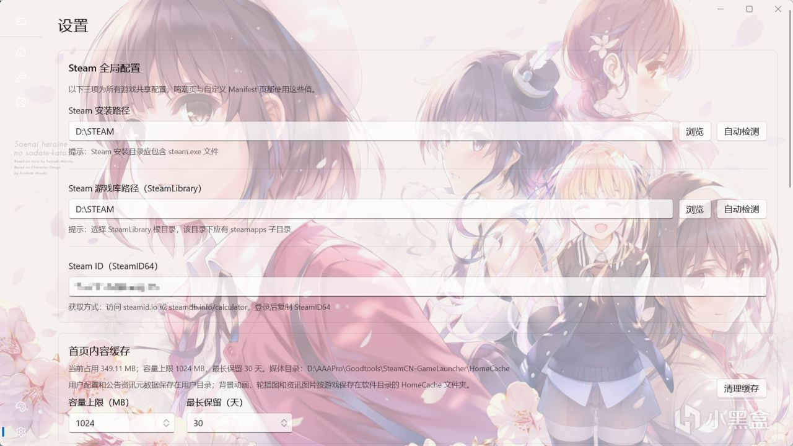
Steam ID 可在 Steam 的「账户明细」中查看。有多个游戏库时，请手动核对选中的库，自动检测结果未必是你希望存放安装记录的那个库。
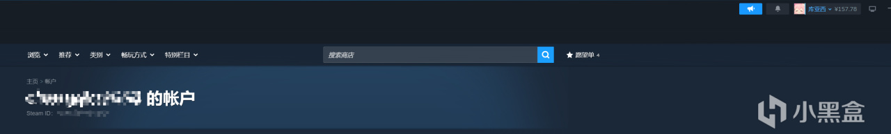
③ 填写 AppID，自动获取游戏信息
进入自定义配置页面，填写目标游戏的 AppID，然后点击「自动获取游戏信息」。原帖以终末地的 4732690 为例，其余信息由软件自动填写；配置其他游戏时请使用该游戏自己的 AppID。
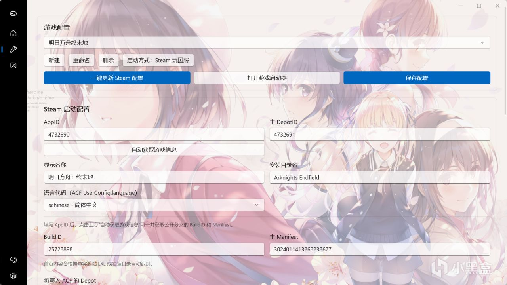
AppID 可以在 Steam 库中打开游戏的「属性 → 更新」查看。如果信息没有自动填入，检查 Steam 相关网络连接，必要时使用网络加速后重试。
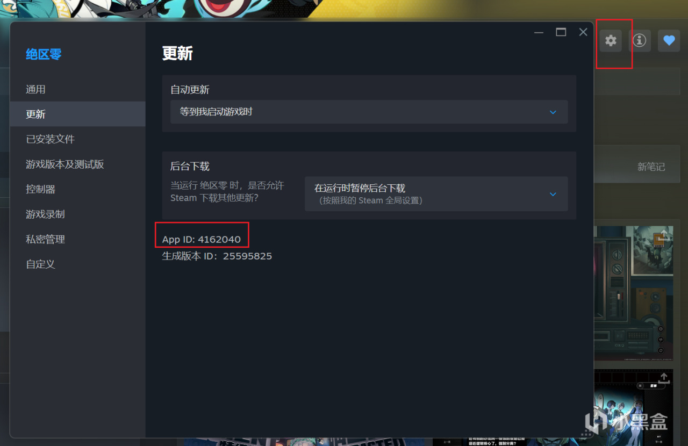
④ 选择实际启动目标
部分游戏可以直接运行游戏本体。可先双击候选 EXE，确认能否正常进入并游玩；也可在游戏运行时，通过任务管理器定位实际游戏进程。原帖以鸣潮的 Client-Win64-Shipping.exe 为例，提醒不要把仅用于打开启动器的程序当成游戏本体。
需要桥接程序的游戏，请先按游戏适配指南完成下载与放置，再在「游戏可执行文件」中选择对应的桥接 EXE。使用前，先通过官方启动器完成一次进入游戏、游玩和正常退出。
游戏本体和官方启动器可以分别放在同一个父目录下的两个文件夹中。配置时区分二者的位置；「游戏启动器（可选）」填写官方启动器路径，方便后续更新国服文件。
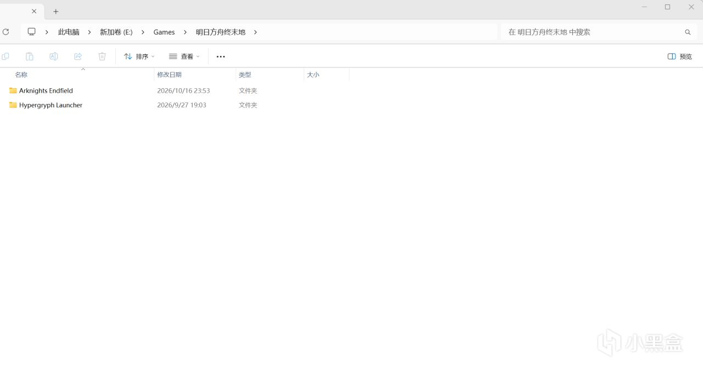
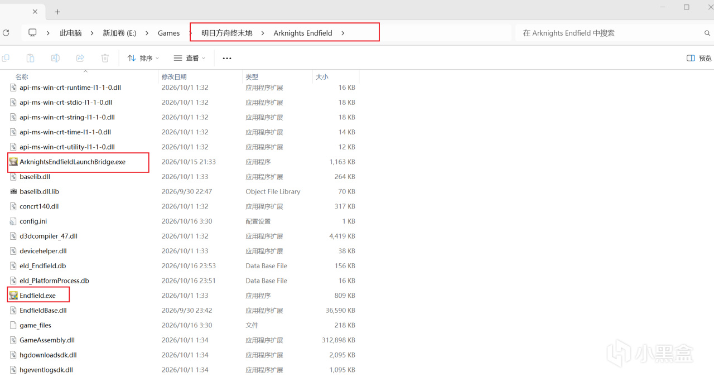
确认实际可执行文件后，点击页面底部「生成配置文件」，按提示生成并覆盖配置，然后重启 Steam。此时检查游戏库中的按钮是否已经变为「开始游戏」。
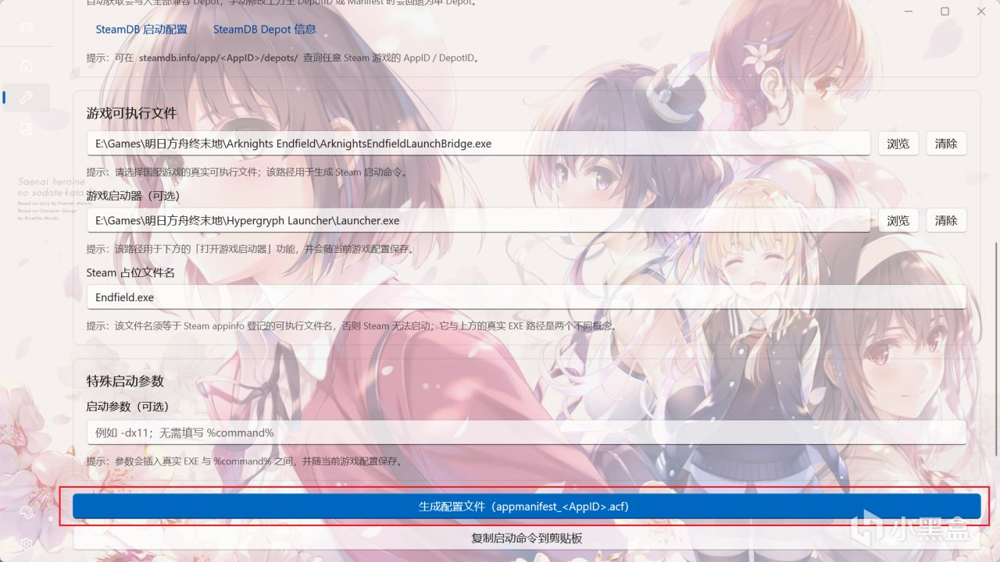
⑤ 将启动命令复制到 Steam
- 复制软件生成的命令点击「生成配置文件」下方的「复制启动命令到剪贴板」。
- 打开 Steam 启动选项在 Steam 库中右键对应游戏，选择「属性 → 通用」。
- 粘贴完整命令将复制的内容粘贴到「启动选项」，保留命令中的路径、引号和
%command%，再从 Steam 点击「开始游戏」。
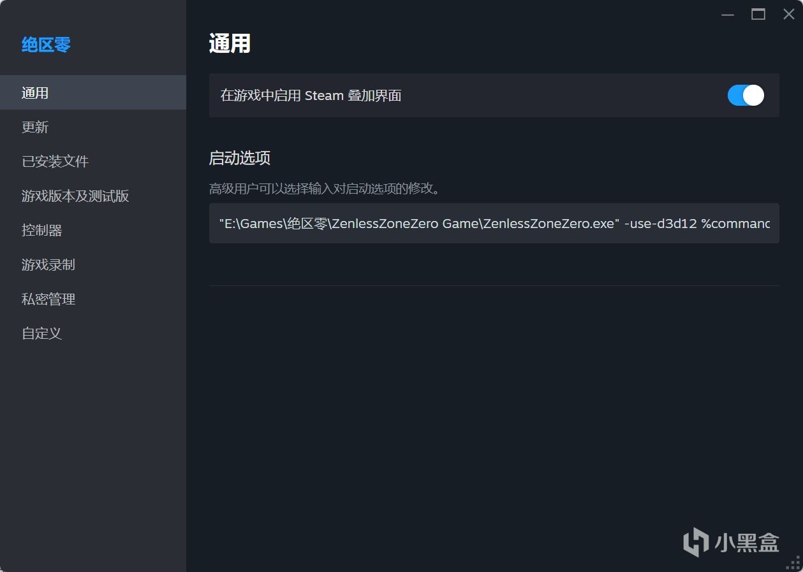
⑥ 设置 DX11、DX12 等启动选项
原帖中的终末地桥接方案沿用官方启动器的设置：需要 DX11 时，在鹰角启动器中勾选「DX11 启动」即可，无需额外为桥接器添加参数；未勾选时使用官方默认的 DX12 模式。
鸣潮的 DX11 / DX12、高清材质包等特殊设置，请前往游戏适配指南查看对应游戏的操作说明。
⑦ 游戏更新后如何处理
情况一：Steam 的「开始游戏」变为「更新」。Steam 侧数据与国服版本并不同步，Steam 提示更新不代表国服一定有新版本。重新生成刚才的配置文件，按提示替换后重启 Steam。
如果误点 Steam「更新」并开始下载国际服文件，先停止下载。核对安装目录后，卸载误下载的 Steam 游戏并清理对应残留，再重新配置；请确认操作对象，保留原有国服文件。
情况二：国服发布新版本。通过官方启动器更新游戏文件。配置过官方启动器路径后，可使用软件中的「打开游戏启动器」快捷按钮。更新完成后，重新生成配置文件、替换并重启 Steam。
五、外观设置
打开「外观」页面，启用自定义背景并点击「导入图片」。可以导入多张图片、随时切换，并调整不透明度等显示参数。
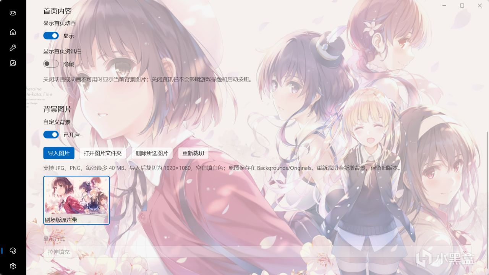
六、截图管理
在「截图」页面可以快捷预览图片，双击放大，也可以进行删除操作。页面按日期分组展示截图，并可切换游戏和排序方式。
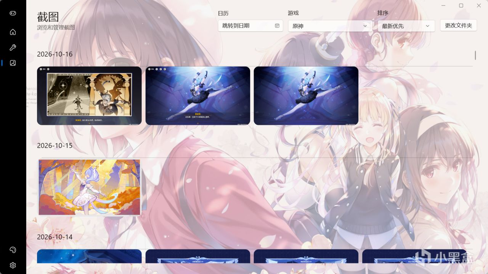
点击日历可跳转到指定日期；当天没有截图时，无法跳转。
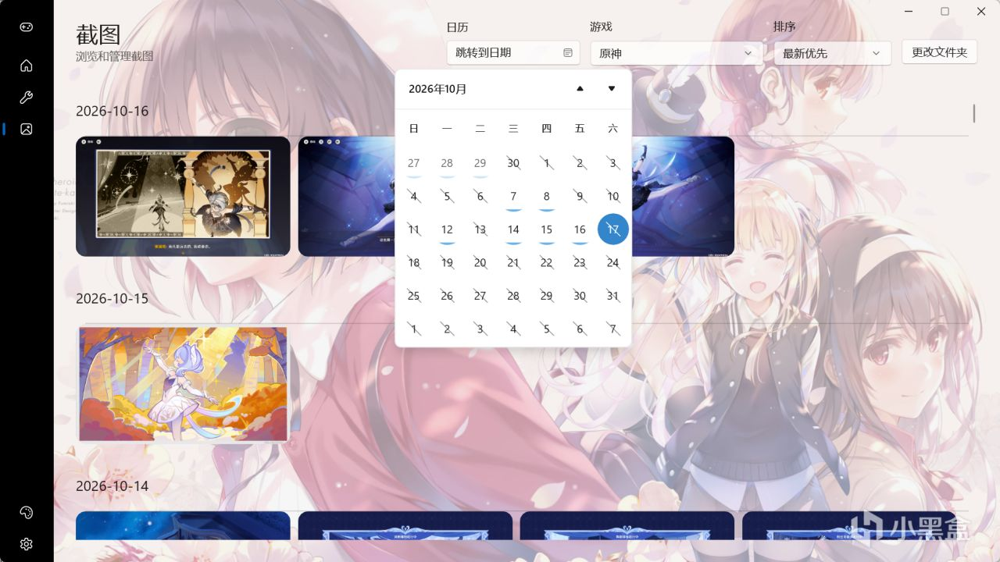
点击「更改文件夹」选择截图来源。可以使用游戏自带的截图目录、显卡工具的截图目录，或自己整理的其他图片文件夹。
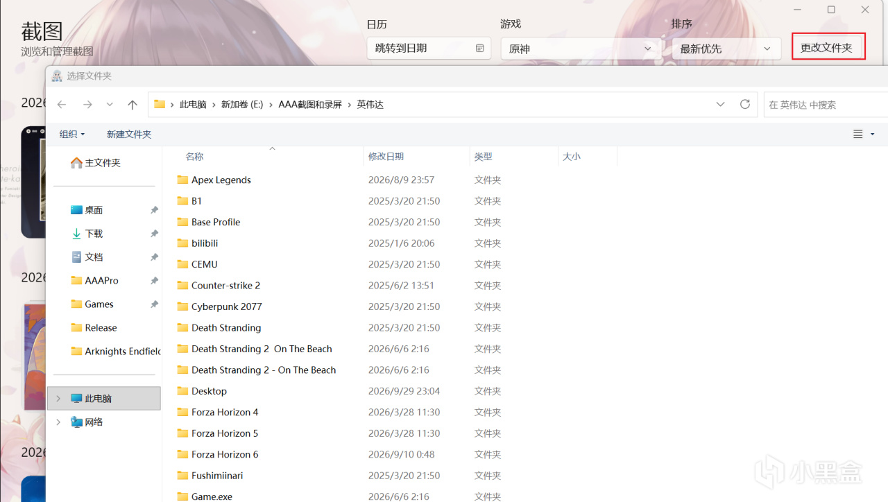
七、使用说明
本工具通过生成 Steam 用于识别安装状态的 ACF 配置文件，并设置启动命令，将启动目标指向本地游戏；不修改游戏文件或游戏内存数据，也无法启动当前账号尚未入库的 Steam 游戏。
请支持正版游戏。本工具仅供学习与研究使用，不保证所有游戏、账号与客户端环境下的兼容性或使用结果；使用过程中产生的问题由使用者自行判断与承担。